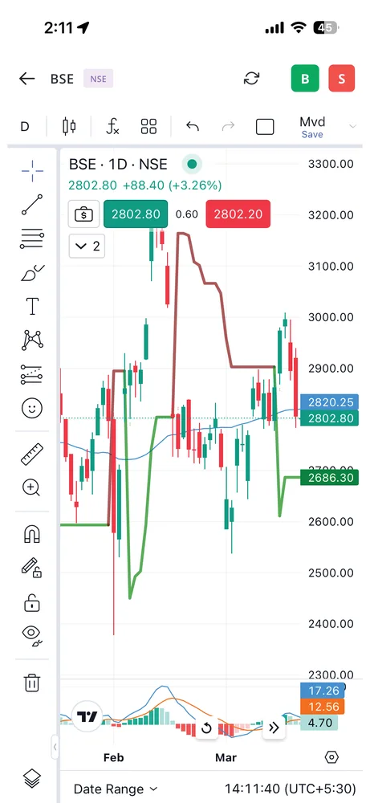

NRI Services
Online equity trading, mutual funds, PMS, insurance, IPO and other investment services supported through the GCC region.
A broad product suite and digital platforms help partners engage clients with different financial requirements, goals and market interests.
Become a Partner
The franchise brochure presents Geojit as a one-stop provider of investment and financial solutions. Product eligibility, suitability and access depend on applicable rules.

Flip provides trading access to equities, futures, options, commodities and currencies through a mobile interface.

An online platform for mutual fund investment and goal-based portfolio management.

Research-based baskets of stocks designed for different investment strategies, risk preferences, investment horizons and amounts.
Geojit IDEAS provides research-backed stock recommendations and market information. The franchise brochure describes a research team with over 20 analysts and coverage of 250+ companies.
A selection of the recurring research outputs listed on page 15 of the franchise brochure.
| Report | Frequency | Research source |
|---|---|---|
| Market Radar | Daily morning | Equity Technical |
| Derivative Insights | Daily morning | Equity Technical |
| New Week New Ideas | Weekly | Equity Technical |
| Rollover Insights | Monthly | Equity Technical |
| Market at a Glance | Daily morning | Commodity |
| Options Snapshot | Daily morning | Commodity |
| Evening Roundup | Daily evening | Commodity |
| Commodity Updates | Periodic | Commodity |
| IPO Note | Periodic | Fundamental |
| Initiating Coverage | Periodic | Fundamental |
| Thematic Notes | Periodic | Fundamental |
| Quant Funda Research Recommendations | Periodic | Fundamental |
| Portfolio Review | Periodic | Fundamental |
| Geojit Spotlight Investment Outlook | Periodic | Fundamental |
| Daily Market View | Daily | Fundamental |
| Weekly Market View | Weekly | Fundamental |
| Model Portfolio | Monthly | Fundamental |
| High Dividend Yield Monitor | Monthly | Fundamental |
| Insight Stock Recommendations | Monthly | Fundamental |
| Result Updates | Quarterly | Fundamental |
| Strategy Notes | Half yearly | Fundamental |
| Union Budget Analysis | Yearly | Fundamental |
| Diwali Stock Recommendations | Yearly | Fundamental |
| Media Queries | Periodic | Fundamental |
| Market Articles | Periodic | Fundamental |
| Interviews: live/recorded | Periodic | Fundamental |
| Nationwide Branch Interactions & Guidance | Weekly | Fundamental |
| Geojit Insight Stock Articles | Monthly | Fundamental |
| Geojit Spotlight Stock Recommendation | Monthly | Fundamental |
| Union Budget Expectations | Yearly | Fundamental |
Additional services described in the franchise brochure, subject to product eligibility and suitability.
Online equity trading, mutual funds, PMS, insurance, IPO and other investment services supported through the GCC region.
Long-term portfolio management approaches for eligible investors, with professionally managed portfolios.
Category III alternative investment fund using long and short derivatives strategies, with associated market and strategy risks.
Wealth solutions for HNI/UHNI clients, family offices, senior professionals and founders, including multiple asset classes.
The original PMS brochure page contains an editing comment regarding portfolio names. Detailed scheme/portfolio names have been intentionally held back from this prototype until Research/Compliance verifies them. No returns or outcomes are guaranteed.
The brochure's supporting product detail is available below without overwhelming the main page.
The brochure lists these Smartfolios basket/strategy names. Availability, suitability and basket composition must be checked before communicating to clients.
Geojit describes a dedicated presence for NRI clients in the UAE, Bahrain, Kuwait and Oman. Services highlighted include:
The brochure describes Geojit Yield Plus as a Category III AIF using long/short derivatives strategies. It seeks risk-adjusted absolute returns over the long term, but these objectives are not assured and investments involve risk.
Details of product risks, strategy and eligibility should be read in the relevant offer documents.
The brochure lists UHNI/HNI clients, family offices, C-suite professionals and startup founders. Its stated framework emphasises client centricity, asset allocation, risk management and long-term relationships.
Solutions covered:
The brochure describes professionally managed equity portfolios targeting long-term wealth creation, with a stated investment horizon of approximately five to six years. It notes diversification considerations and assessment of business quality and management.
Individual portfolio names, composition and their accompanying descriptions on page 18 require editorial confirmation; they are not reproduced in this public-facing prototype.
Explore a Geojit partnership backed by expertise, technology and structured business support.